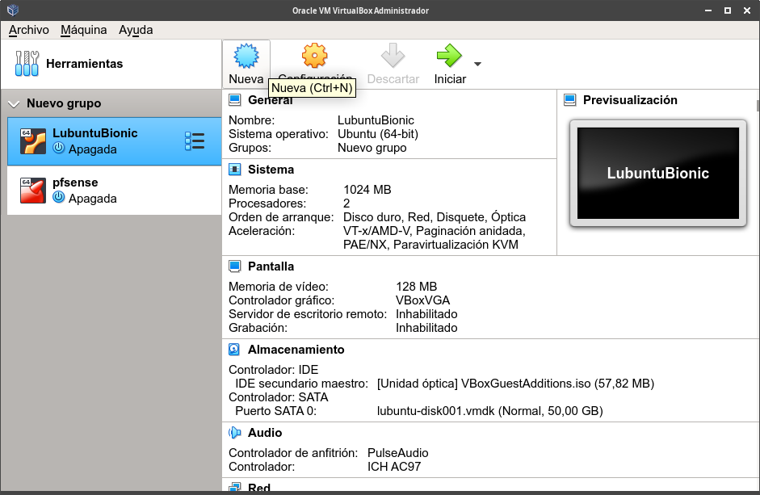
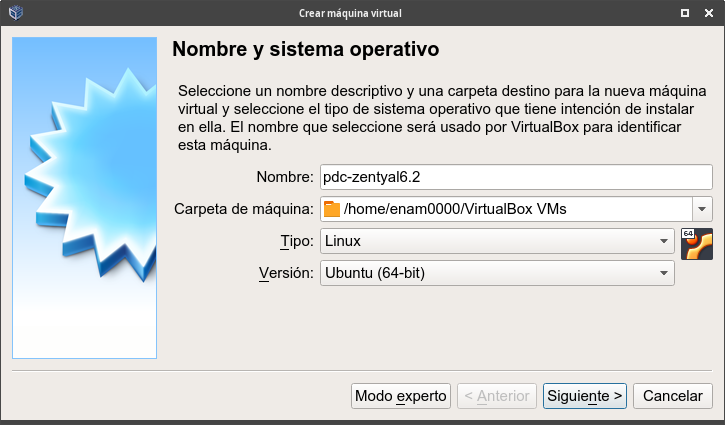
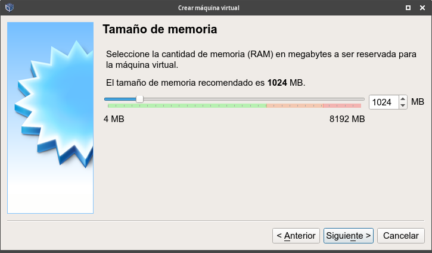
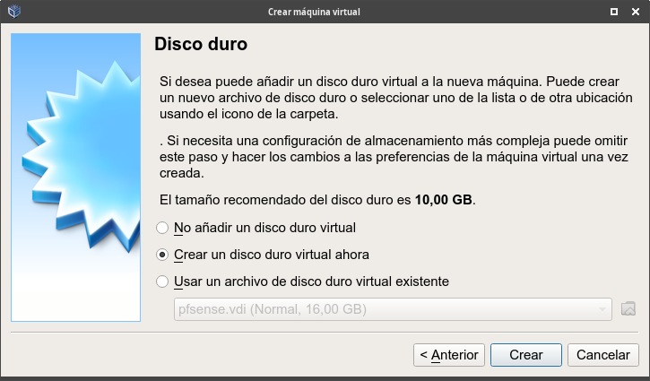
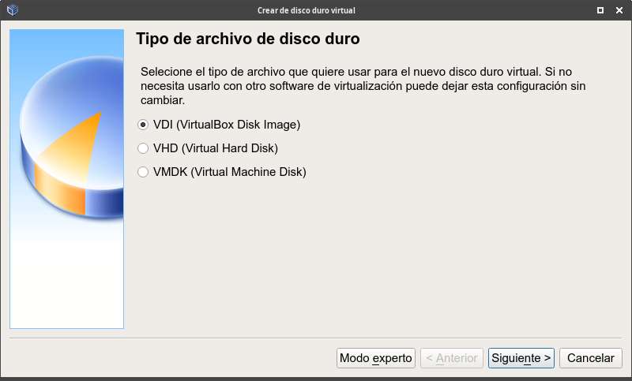
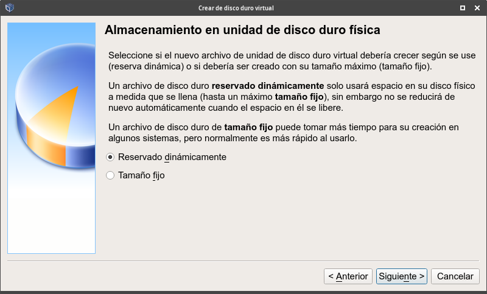
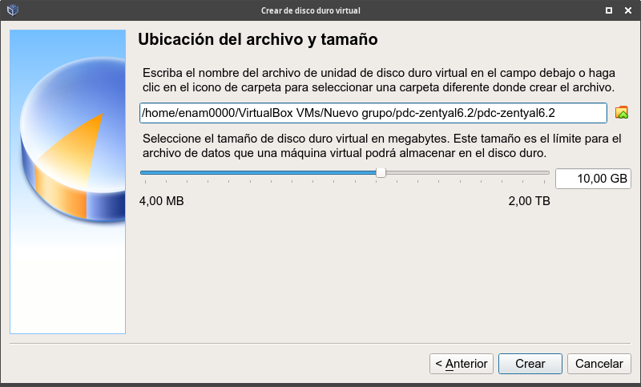

Procedimiento de creación de una máquina virtual
Para crear una nueva máquina virtual, abrimos VirtualBox:

- Hacemos clic en el botón "Nueva".
- Pulsamos la combinación de teclas "Ctrl + N".
- O hacemos clic en el menú "Máquina -> Nueva".
Con ésto, iniciaremos un asistente de creación de máquinas virtuales:

En esta primera ventana:
- Tendremos que dar un nombre a la máquina virtual.
- Seleccionar en qué carpeta guardar la máquina o dejaremos la ubicación por defecto.
- Seleccionaremos el tipo de sistema operativo.
- Y elegiremos la versión que vamos a instalar. Podremos elegir una versión específica de Linux o, si no encontramos nuestra versión, una genérica, como por ejemplo: Linux 2.6 / 3.x /4.x (64-bit).
Una vez introducidos los datos, y seleccionadas las opciones, hacemos clic en el botón "Siguiente".
En el siguiente paso, tendremos que elegir la cantidad de memoria que queremos asignar a la máquina virtual:

Por defecto, en función de las opciones de sistema operativo y versión elegidas en la primera ventana, nos ofrecerá un tamaño de memoria recomendado, que podemos incrementar o reducir. Para este ejemplo, vamos a dejar el tamaño recomendado: 1GB.
No os preocupéis por la cantidad de memoria asignada a la máquina virtual durante el proceso de creación. Éste es un parámetro que podremos modificar posteriormente en cualquier momento. Es una de las ventajas de la virtualización.
Una vez elegida la cantidad de memoria RAM que queremos asignar a la máquina, tendremos que crear un disco duro virtual para nuestra máquina:

Aquí tenemos varias posibilidades:
- No añadir un disco duro virtual a la máquina. Esta opción puede ser útil para disponer de una máquina que inicia un sistema live o arranca por red.
- Crear un disco duro virtual del tamaño recomendado (tamaño que podremos cambiar después).
- Usar un archivo de disco duro virtual previamente creado. Si elegimos esta opción, podremos seleccionar cualquiera de los discos duros que hayamos creado en VirtualBox.
Como lo que nos interesa en este ejemplo es crear un nuevo disco duro virtual del tamaño recomendado, hacemos clic en el botón "Crear".
Al pulsar el botón "Crear", la siguiente ventana del asistente nos pedirá que seleccionemos el tipo de archivo del disco duro virtual:

Nos ofrece tres posibilidades:
- VDI (Virtual Disk Image): Es el formato propio de los discos duros de las máquinas virtuales de VirtualBox.
- VMDK: Es un formato de disco duro virtual usado por otras herramientas de virtualización, como por ejemplo VMware.
- VHD. Es el formato de disco duro virtual usado por las herramientas de virtualización de Microsoft.
Podemos elegir cualquiera de los formatos. Si habitualmente trabajamos con VirtualBox, podemos dejar la opción por defecto: VDI.
Cambiar el formato del archivo de disco duro virtual podría servirnos para utilizar el disco duro virtual con otras herramientas de virtualización.
Hacemos clic en el botón "Siguiente" y veremos una ventana como la siguiente:

Aquí tendremos que elegir si deseamos que el archivo de disco duro virtual crezca dinámicamente conforme se vaya usando. O si deseamos reservar un tamaño fijo. En la imagen anterior podéis ver las ventajas de cada opción.
La opción por defecto es que el archivo de disco duro crezca dinámicamente.
Una vez elegida la opción que más nos interese, hacemos clic en el botón "Siguiente". Pasaremos a una nueva ventana en la que tendremos que elegir la ubicación del archivo de disco duro virtual y su tamaño:

Aquí podemos modificar el tamaño de archivo de disco duro virtual recomendado, aumentándolo o reduciéndolo.
Por otro lado, podemos cambiar la ubicación donde se debe guardar el archivo de disco duro virtual. Si os fijáis en la pantalla anterior, observaréis que podemos agrupar máquinas virtuales y que VirtualBox guardará sus discos duros virtuales en una estructura en árbol:
- En el ejemplo de la imagen anterior, las máquinas virtuales se guardarán en el directorio "VirtualBox VMs" dentro del directorio home del usuario.
- Si hemos creado un grupo de máquinas virtuales, éstas se guardarán dentro de un directorio alojado dentro del directorio "VirtualBox VMs" con el nombre del grupo. Como en el ejemplo anterior, el grupo de máquinas virtuales se llama "Nuevo grupo", las máquinas virtuales se guardarán dentro del directorio "Nuevo grupo".
- En cuanto al nombre del disco duro virtual, coincidirá con el nombre de la máquina virtual y se guardará dentro de un subdirectorio con el nombre de la máquina. En el ejemplo: pdc-zentyal6.2
En cualquier caso, eso es algo que podemos cambiar.
Por último, hacemos clic sobre el botón "Crear" y habremos creado nuestra primera máquina virtual.